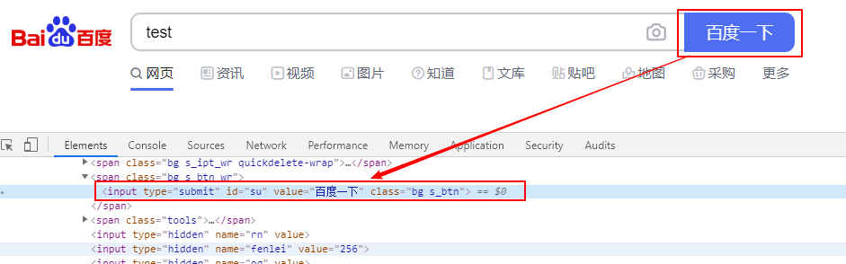
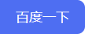

简介
我们定位到Web页面元素之后，可以对元素进行一系列的操作，实现跟页面的交互。包括点击、文本输入、元素属性获取等。常用的方法列举如下：
| 方法 | 描述 |
|---|---|
| click() | 点击元素 |
| send_keys(*value) | 用于向EditText(可编辑文本控件)输入文本；还可以用于输入文件（如百度图片搜索输入图片） |
| get_attribute(name) | 获取元素属性 |
| is_selected() | 元素是否被选择，一般用于判断checkbox 或者 radio 控件状态 |
| screenshot(filename) | 截取元素 |
点击、输入文本
- 打开 https://www.baidu.com/
- 搜索框输入“test”
- 点击“百度一下”
- 关闭网页

python代码：
1 | self.driver.find_element_by_id("kw").send_keys("test") |
文件上传
input标签可以直接使用send_keys(文件地址)上传文件
打开百度图片搜索，输入图片地址

python代码：
1 | self.driver.get("https://image.baidu.com/") |
get_attribute()
获取元素属性
比如获取“百度一下”这个button的属性：type、id、value、class
python代码：
1 | baidu = self.driver.find_element_by_id("su") |
is_selected()
在勾选单选框（radio）和复选框（checkbox）的时候，如果已经被选中，再次点击就会反选了，所以在点击之前需要判断一下是否已经选中。可以使用is_selected()方法来判断是否被选中
python代码：
1 | def checkbox_switch(self,switch="ON"): |
screenshot()
截取元素
python代码：
1 | self.driver = webdriver.Chrome() |
结果图baidu.png

当然也可以保存整个页面窗口截图
- get_screenshot_as_base64()
- get_screenshot_as_file(filename)
- get_screenshot_as_png()
- save_screenshot(filename)
1 | self.driver.save_screenshot('baidu.png') |
其他常用方法
1 | #关闭selenium打开的所有窗口 |
控件操作1
2
3
4
5
6# 清空输入框数据
element.clear()
# 获取文本的值
element.text
# 表单提交
element.submit()
本文标题:Web自动化测试 | 元素操作
文章作者:hiyo
文章链接:https://hiyongz.github.io/posts/selenium-webelement-operate/
许可协议:本博客文章除特别声明外，均采用CC BY-NC-ND 4.0 许可协议。转载请保留原文链接及作者。